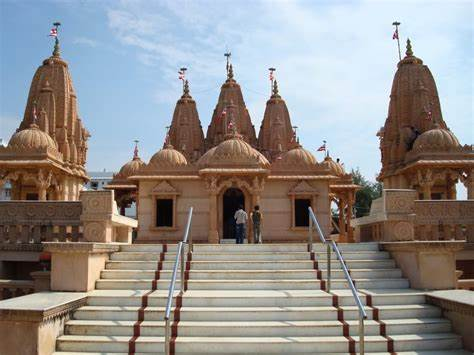

Welcome To Valsad...

Bulsar City
Valsad district is one of the 33 districts in the Western Indian state of Gujarat. It is bound by Navsari district to the north, Nashik district of Maharashtra state to the east, and Dadra and Nagar Haveli district of the Dadra and Nagar Haveli and Daman and Diu (DNHDD) union territory and the Palghar district of Maharashtra to the south.
The Arabian Sea lies west of the district. The coastal Daman enclave of DNHDD is bounded by Valsad district on the north, east, and south. The district's administrative capital is Valsad. The district's largest city is Vapi.
The district covers 3008 square kilometres and is divided into six talukas: Valsad, Vapi, Pardi, Umargam, Kaparada and Dharampur. The population was 1,705,678 in 2011, up from 1,410,553 in 2001.Valsad is well known for its production of mangoes, sapodilla, and teak, and its chemical and industrial stretch based on Vapi and Atul.
On 1 June 1966, Valsad district was formed after Surat district was bifurcated into Valsad and Surat district. Then, Valsad, Dharampur, Pardi, Umargam, Navsari, Vansda, Chikhli and Gandevi were talukas of Valsad district.
On 2 October 1997, Navsari district was formed after Valsad district was bifurcated into Valsad and Navsari district. The taluka of Kaparada was separated from Dharampur on 15 October 1997. After newly formed Kaparada taluka - Valsad, Dharampur, Kaparada, Pardi, Umargam were talukas of Valsad district.
On 9 September 2013, Vapi taluka was separated from Pardi taluka. After newly formed Vapi taluka - Valsad, Dharampur, Kaparada, Pardi, Vapi, Umargam are talukas of Valsad district.
Famous Places in Valsad City
- Barumal Mahadev Temple, Dharampur
- Shankar Waterfall
- Bilpudi Waterfall, Dharampur, Valsad
- Sainath Temple, Tithal Valsad
- Tithal Beach, Valsad
- Udvada Atash-Behram -Fire temple
- Nargol Beach, Nargol, Umargam, Valsad
Valsad City Famous Food Item
- Umbadiyu
- Bhajiya
- Undhiyu
- Pav Bataka
- JK khaman
© Copyright Reserved
Go To Main Page